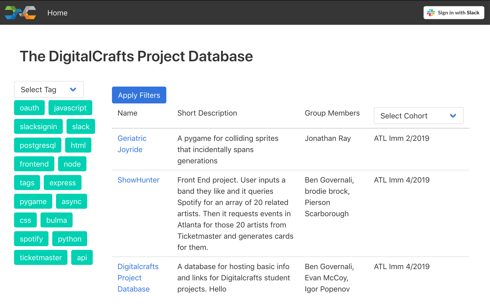

Igor
Popenov
Web Developer /
Mountain biking enthusiast
Hello, my name is Igor and I am a web developer in Atlanta, Georgia.
I am from Atlanta, GA and I am currently attending the DigitalCrafts Immersive Web Development bootcamp.
DigitalCrafts is a top-rated coding bootcamp teaching the fundamentals of programming through an intensive classroom experience, transforming beginners into full-stack software engineers with cutting-edge skill sets.
I am currently enrolled in the Immersive Web Development course that covers Python, HTML, CSS and JavaScript, including an emphasis on cutting-edge frameworks like React/Redux and server side technologies including Node.js, Express, and PostgreSQL.
In my freetime I enjoy mountain biking and playing soccer.
Projects:
DigitalCrafts Project Database
The DigitalCrafts Project Database is a full-stack project for DigitalCrafts built with Node, Express, PostgreSQL, HTML, CSS, Javascript, and ES6 Renderer. It was built with a team of 3 over the course of 3 days in class. We built the DCPD to be a solution to a problem that many bootcamp students have: finding inspiration (or help) when building projects. Any DigitalCrafts student or alumni can submit a project to the database (via Slack authentication), and the database is viewable to everyone.
CryptoLogic
CrytpoLogic is a front-end only application written in vanilla Javascript that utilizes APIs to bring together the multitudinous array of cryptocurrencies under a single domain. The application itself is essentially a dashboard, displaying surface-level information on each currency in real time, sorted by market capitalization. If any particular coin is clicked, a graphical representation of the prior week’s price change is rendered. The overall goal of the site is to provide the user with the necessary tools to make an informed decision regarding their cryptocurrency assets.

Spaghetti Man
Spaghetti Man is a game written in Python 3 using pygame (the library), which is a Free and Open Source python programming language library for making multimedia applications like games built on top of the excellent SDL (Simple DirectMedia Layer) library. In my game, the main character named Spaghetti Man is able to move around on the sceen and throw meatballs at his enemies in order to neutralize them. The enemies include zombies that run and walk, flying pizza cats, and tiny missiles, all of which cause damage to him when they collide.